Álbumes
Quién fue David Robert Jones y los personajes que inventó para convertirse en David Bowie. Elegí una portada para entrar.

Discografía completa
Extended Plays (EPs)
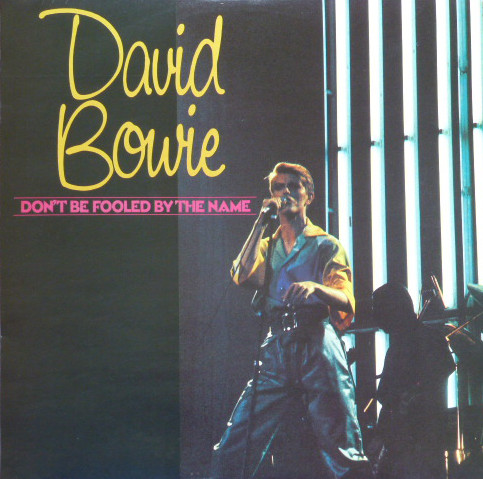
Don't Be Fooled by the Name
1981
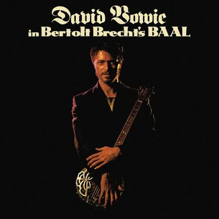
David Bowie in Bertolt Brecht's Baal
1982
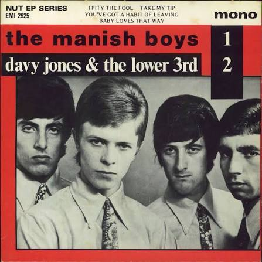
The Mannish Boys / Davy Jones and the Lower Third
1982
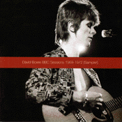
BBC Sessions 1969–1972
1996
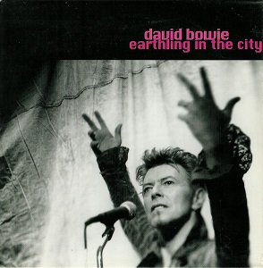
Earthling in the City
1997
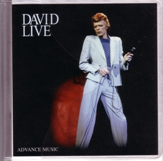
Live EP (Live at Fashion Rocks)
2005
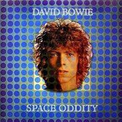
Space Oddity
2009
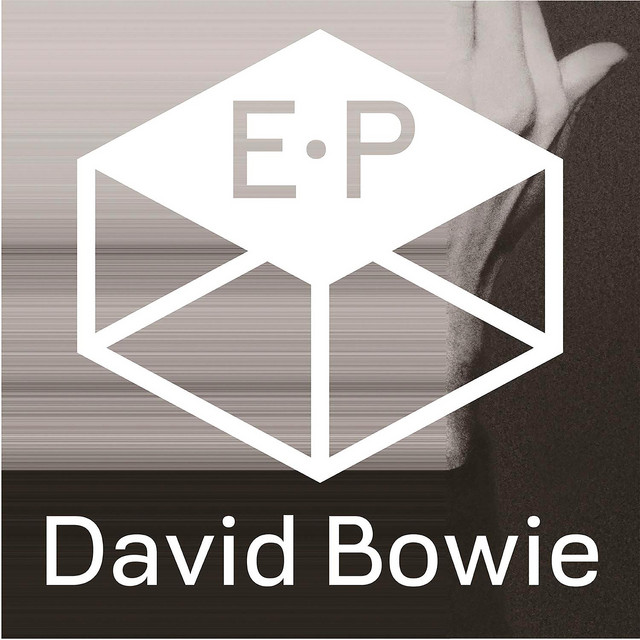
The Next Day Extra EP
2013
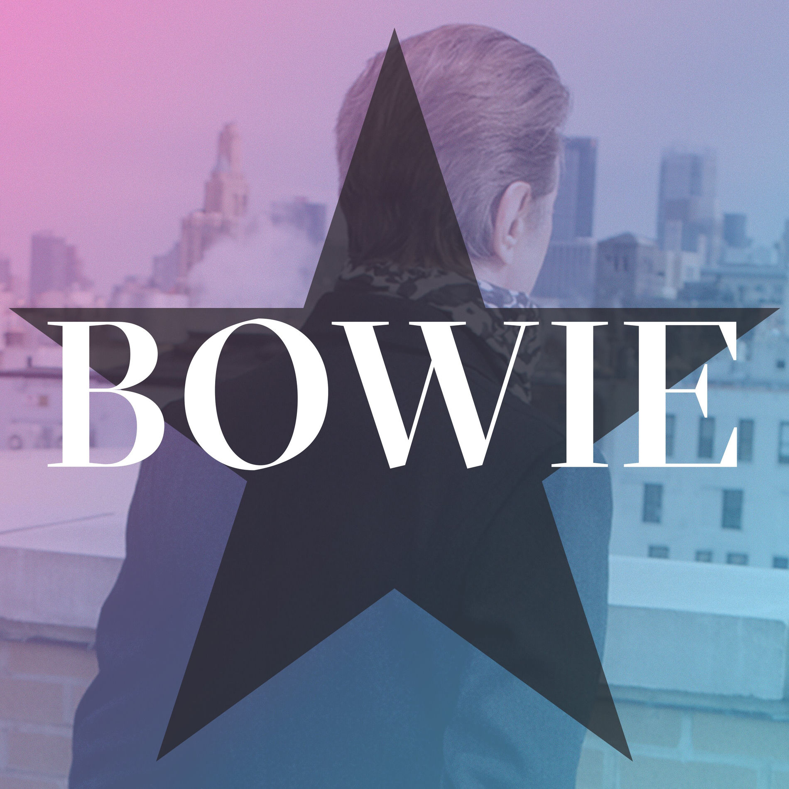
No Plan
2017
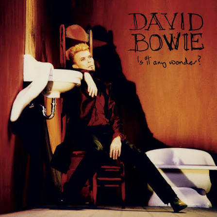
Is It Any Wonder?
2020
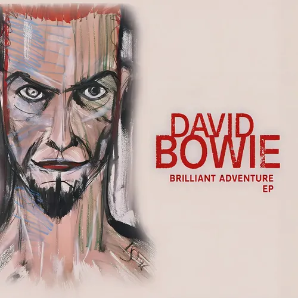
Brilliant Adventure EP
2022
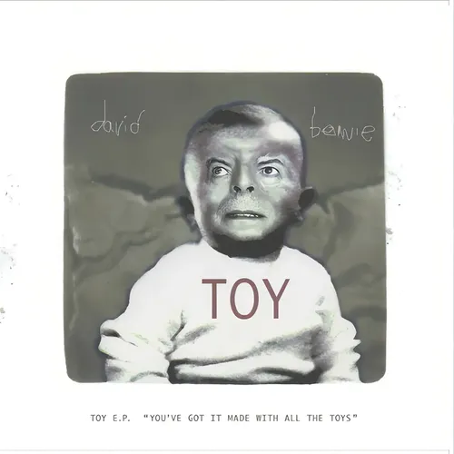
Toy EP
2022
Álbumes en vivo
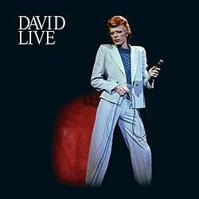
David Live
1974
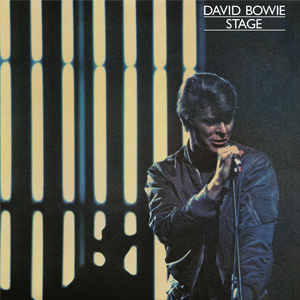
Stage
1978
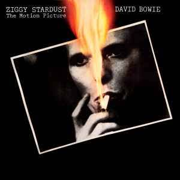
Ziggy Stardust: The Motion Picture
1983
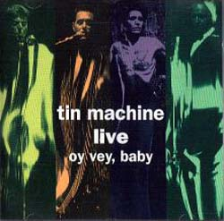
Tin Machine Live: Oy Vey, Baby
1992
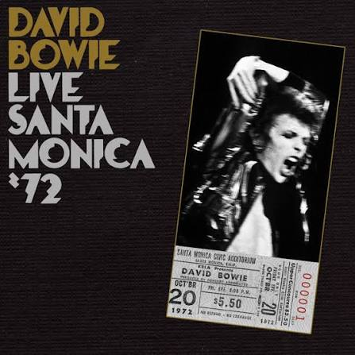
Live Santa Monica '72
1994
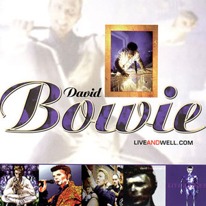
LiveAndWell.com
2000
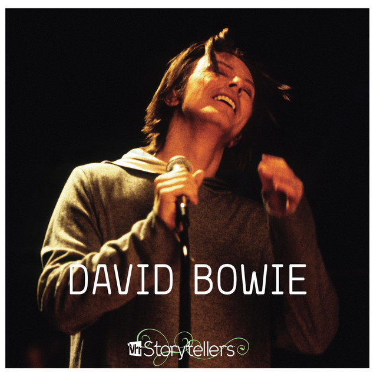
VH1 Storytellers
2009
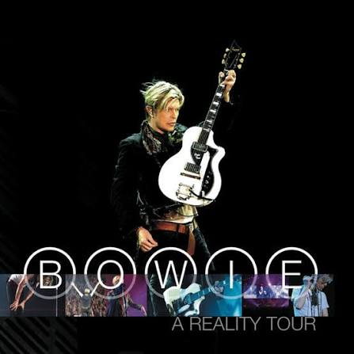
A Reality Tour
2010
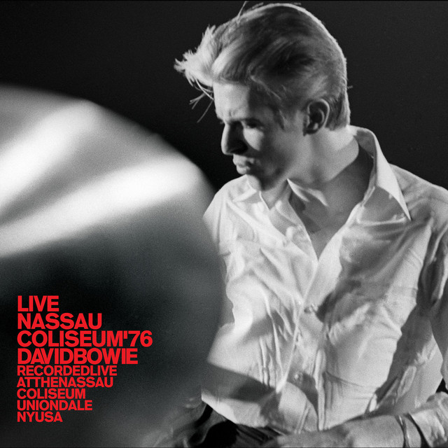
Live Nassau Coliseum '76
2017
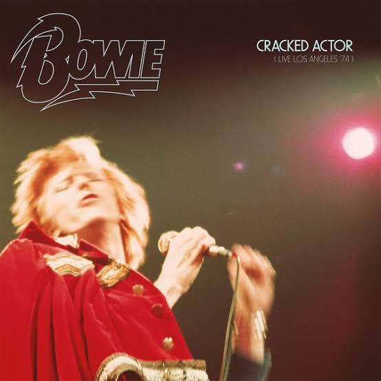
Cracked Actor (Live Los Angeles '74)
2017
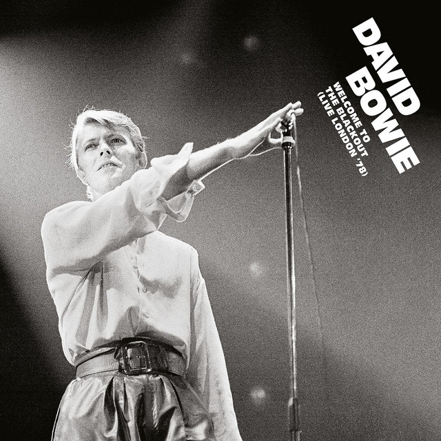
Welcome to the Blackout (Live London '78)
2018
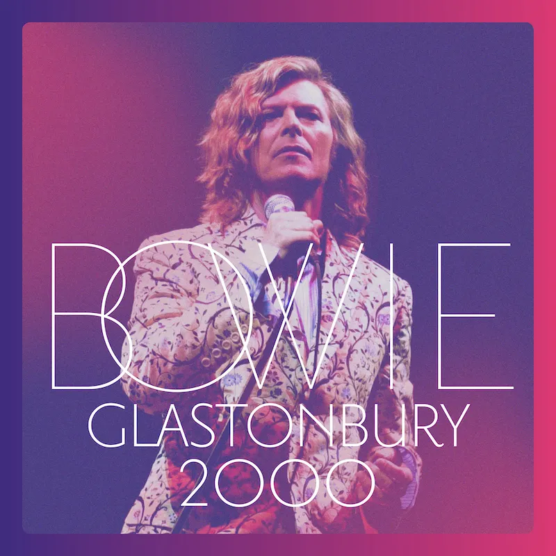
Glastonbury 2000
2018
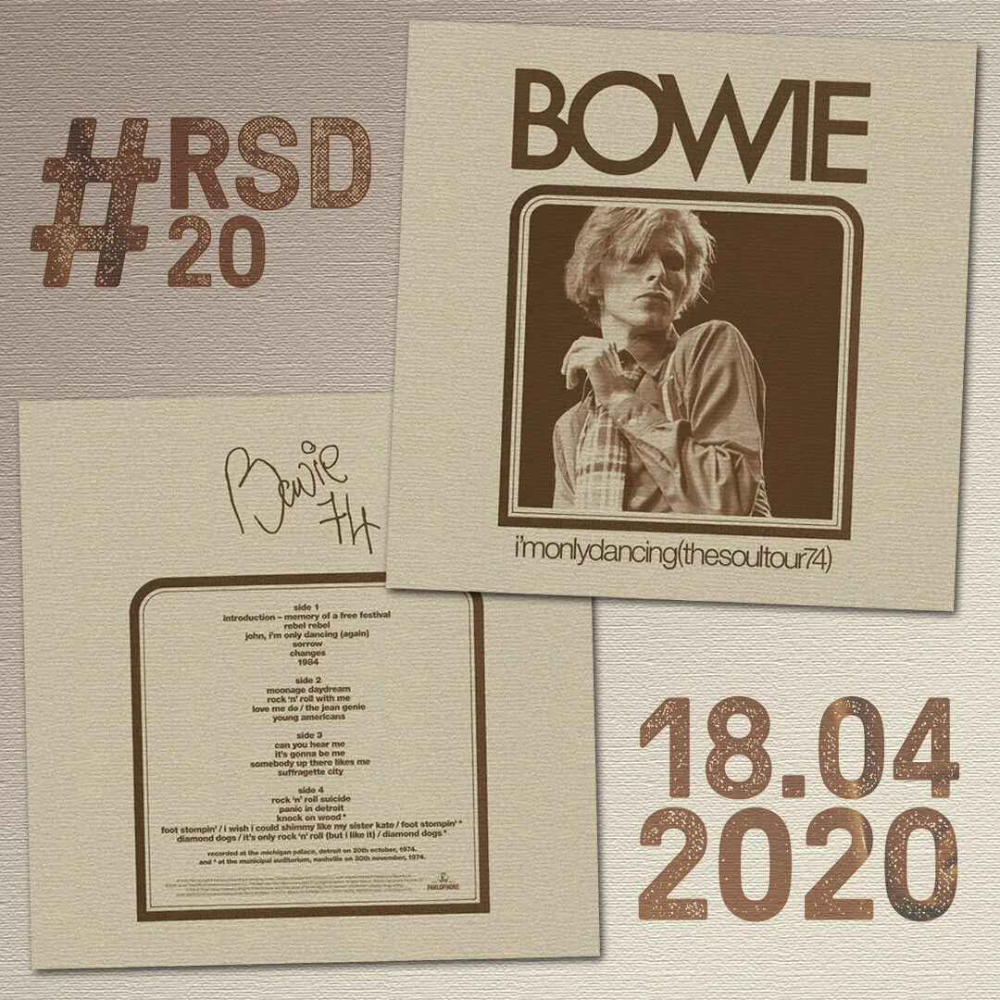
I'm Only Dancing (The Soul Tour 74)
2020
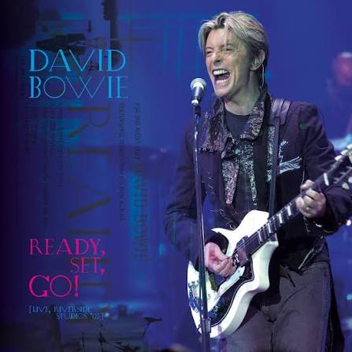
Ready, Set, Go! (Live, Riverside Studios '03)
2025